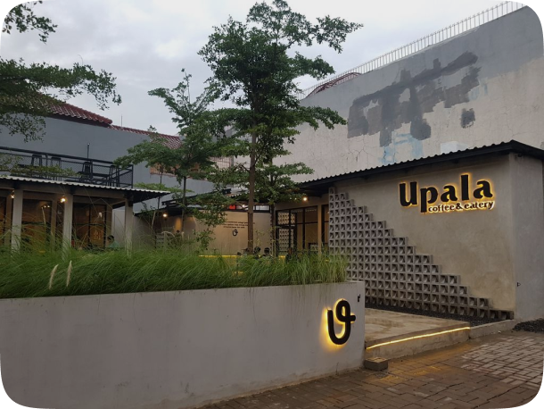

Story of
Upala Coffee
Hadir di sekitar akhir bulan Januari 2022, datangnya Upala turut meramaikan kedai kopi di sepanjang Jalan Kayu Putih Tengah yang terbilang masih sedikit jumlahnya. Upala di kelola oleh 3 orang sahabat yang ingin mencoba bisnis coffee shop dan masih dalam satu naungan dengan Perpaduan Group.